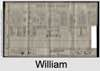

| [Index] |
| William Edmund BOYCE (1864 - 1941) |


|
| b. 18 Jun 1864 at Exmouth? |
| m. 1890 Ellen Rebecca HORE (1865 - 1934) |
| d. 21 Jun 1941 at Exmouth aged 77 |
| Near Relatives of William Edmund BOYCE (1864 - 1941) | ||||||
| Relationship | Person | Born | Birth Place | Died | Death Place | Age |
| Grandfather | John BOYCE | 20 Jul 1804 | Cockington, Devon | 19 Dec 1871 | Teignmouth, Devon | 67 |
| Grandmother | Jane WARD | 1801 | 27 Jan 1851 | 50 | ||
| Grandfather | Richard REEVE | 1817 | Hittisleigh, Devon | Y | ||
| Grandmother | Selina BREWER | 1818 | Exminster | 1899 | 81 | |
| Father in Law | George HORE | 1826 | Exmouth | 12 Jan 1875 | at Sea | 49 |
| Mother in Law | Rebecca WIDDECOMBE | 1823 | Lympstone, Devon | 1911 | 88 | |
| Father | Edmund William John BOYCE | 06 Dec 1830 | Shaldon, Devon | 1910 | 80 | |
| Mother | Elizabeth REEVE | 1839 | Heavitree/Wonford, Devon | 25 Jun 1911 | Bath | 72 |
| Self | William Edmund BOYCE | 18 Jun 1864 | Exmouth? | 21 Jun 1941 | Exmouth | 77 |
| Wife | Ellen Rebecca HORE | 1865 | Exmouth | 23 Aug 1934 | Exmouth | 69 |
| Son | Living or Recently Deceased | |||||
| Son | John Reginald BOYCE | 1895 | Exmouth | 10 May 1916 | 21 | |
| Daughter | Living or Recently Deceased | |||||
| Son | Living or Recently Deceased | |||||
| Son | Living or Recently Deceased | |||||
| Brother | John Richard Edmund BOYCE | 1862 | Exmouth | 1863 | Exmouth | 1 |
| Brother | Richard John BOYCE | 1866 | Exmouth | 11 May 1911 | 45 | |
| Brother | Living or Recently Deceased | |||||
| Sister | Living or Recently Deceased | |||||
| Sister | Selina Elizabeth BOYCE | 1871 | Exmouth? | 1873 | Exmouth? | 2 |
| Sister | Living or Recently Deceased | |||||
| Brother | Arthur BOYCE | 07 Jul 1875 | Exmouth | 07 Jan 1942 | Looe | 66 |
| Daughter in Law | Living or Recently Deceased | |||||
| Son in Law | Living or Recently Deceased | |||||
| Daughter in Law | Living or Recently Deceased | |||||
| Daughter in Law | Living or Recently Deceased | |||||
| Granddaughter | Living or Recently Deceased | |||||
| Granddaughter | Living or Recently Deceased | |||||
| Granddaughter | (Barbara?)Joan LICKFOLD | 1923 | 1934 | 11 | ||
| Granddaughter | Living or Recently Deceased | |||||
| Grandson | Living or Recently Deceased | |||||
| Granddaughter | Living or Recently Deceased | |||||
| Grandson | Living or Recently Deceased | |||||
| Grandson | Living or Recently Deceased | |||||
| Grandson | Living or Recently Deceased | |||||
| Aunt | Sarah Jane BOYCE | 05 Jan 1829 | Shaldon | 1873 | 44 | |
| Uncle | Albert Henry TAYLOR | 1832 | 1878 | 46 | ||
| Uncle | Arthur BOYCE | 30 Jan 1833 | Shaldon, Devon | 14 Oct 1896 | 63 | |
| Aunt | Mary Jane Clark(E) | 08 Jun 1831 | Kenton, Devon | 1874 | Teignmouth? | 43 |
| Aunt | Maria BOYCE | 30 Jan 1834 | Shaldon | 1913 | 79 | |
| Uncle | William Ward BOYCE | 17 Oct 1836 | Shaldon, Devon | 20 Apr 1920 | 83 | |
| Aunt | Florence Hook COLE | 1842 | Shaldon, Devon | 27 Feb 1935 | Devon | 93 |
| Aunt | Ann Ward BOYCE | 15 Mar 1838 | Shaldon, Devon | 1917 | 79 | |
| Uncle | George PAYNE | 1843 | Teignmouth | |||
| Aunt | Harriett Jane BOYCE | 21 Nov 1840 | Shaldon, Devon | 1920 | Wolverhampton | 80 |
| Uncle | Charles Albert H S PARSONS | abt 1839 | Wolverhampton | 1915 | Wolverhampton | 76 |
| Uncle | John Hawkings BOYCE | 20 Nov 1842 | Shaldon/Teignmouth | 14 Oct 1895 | Mortonhampstead | 52 |
| Aunt | Living or Recently Deceased | |||||
| Uncle | William Henry REEVE | 1837 | Heavitree | 1917 | 80 | |
| Aunt | Ruth Elizabeth SEWETT | 1838 | Havant | 1916 | 78 | |
| Cousin | Elizabeth Jane BOYCE | 1858 | West Teignmouth | 17 Oct 1932 | Plymouth | 74 |
| Cousin | Harriett Ellen BOYCE | 1863 | 1867 | 4 | ||
| Cousin | Annie Frances BOYCE | 1868 | West Teignmouth | 07 Apr 1903 | Plymouth | 35 |
| Cousin | Arthur John George BOYCE | 13 Sep 1870 | Exeter Rd West Teignmouth | 01 Mar 1922 | 51 | |
| Cousin | Living or Recently Deceased | |||||
| Cousin | Living or Recently Deceased | |||||
| Cousin | Living or Recently Deceased | |||||
| Cousin | Living or Recently Deceased | |||||
| Cousin | Living or Recently Deceased | |||||
| Cousin | Harry James PARSONS | 1870 | Wolverhampton | 1915 | 45 | |
| Cousin | Living or Recently Deceased | |||||
| Cousin | Eva Jane PARSONS | 1878 | Wolverhampton | 1900 | Wolverhampton | 22 |
| Cousin | Living or Recently Deceased | |||||
| Cousin | Edith BOYCE | 10 Jul 1880 | 1917 | 37 | ||
| Cousin | John BOYCE | 1883 | St Thomas | 1884 | Mortonhampstead? | 1 |
| Cousin | Living or Recently Deceased | |||||
| Cousin | Edgar BOYCE | 1887 | Mortonhampstead | Feb 1887 | 0 | |
| Cousin | William Edmund BOYCE | 1888 | Mar 1900 | 12 | ||
| Cousin | Living or Recently Deceased | |||||
| Niece | Dorothy Elizabeth BOYCE | 1892 | Sudbury, Suffolk | 08 Nov 1918 | Sudbury, Suffolk | 26 |
| Niece | Living or Recently Deceased | |||||
| Niece | Living or Recently Deceased | |||||
| Niece | Florence Maud BOYCE | 1893 | Durston, Somerset | 1924 | registered Bridgwater Dec 1927 5c 352 aged 33 | 31 |
| Niece | Selina Elizabeth BOYCE | 18 Dec 1894 | Coombe West, Somerset | Y | ||
| Nephew | Living or Recently Deceased | |||||
| Nephew | Living or Recently Deceased | |||||
| Nephew | Edmund Henry SEARLE | 1896 | Exmouth | |||
| Niece | Living or Recently Deceased | |||||
| Nephew | Living or Recently Deceased | |||||
| Niece | NO CHILDREN | |||||
| Nephew | George Henry PLIMSOLL | 1877 | Exmouth | |||
| Niece | Edith Jane PLIMSOLL | 1878 | Exmouth | |||
| Nephew | William Arthur PLIMSOLL | 1880 | Exmouth | |||
| Nephew | Ernest John PLIMSOLL | 1883 | Exmouth | |||
| Sister in Law | Jane HORE | 1850 | Lympstone, Devon | |||
| Sister in Law | Charlotte HORE | 1851 | Exmouth | 1893 | 42 | |
| Brother in Law | William James HORE | 1857 | Exmouth | |||
| Sister in Law | Alice Mary HORE | 1859 | Exmouth | |||
| Sister in Law | Emily HORE | 1866 | Exmouth | |||
| Sister in Law | Margaret Elizabeth ABRAHAM | 28 Feb 1866 | Marchwood, Hampshire | Y | ||
| Sister in Law | Florence MATRAVERS | 08 Sep 1867 | South Petherton, Somerset | 1942 | 75 | |
| Brother in Law | Living or Recently Deceased | |||||
| Brother in Law | William Thomas LORAM | 1875 | Bath | 1927 | Bradford on Avon | 52 |
| Sister in Law | Living or Recently Deceased | |||||
| Events in William Edmund BOYCE (1864 - 1941)'s life | |||||
| Date | Age | Event | Place | Notes | Src |
| 18 Jun 1864 | William Edmund BOYCE was born | Exmouth? | Note 1 | ||
| 1890 | 26 | Married Ellen Rebecca HORE (aged 25) | Note 2 | ||
| 1895 | 31 | Birth of son John Reginald BOYCE | Exmouth | Note 3 | |
| 1910 | 46 | Death of father Edmund William John BOYCE (aged 80) | Note 4 | ||
| 25 Jun 1911 | 47 | Death of mother Elizabeth REEVE (aged 72) | Bath | Note 5 | |
| 10 May 1916 | 51 | Death of son John Reginald BOYCE (aged 21) | Note 6 | ||
| 23 Aug 1934 | 70 | Death of wife Ellen Rebecca HORE (aged 69) | Exmouth | Note 7 | |
| 21 Jun 1941 | 77 | William Edmund BOYCE died | Exmouth | ||
| Personal Notes: |
|
1891 census William aged 27 was living with his wife Ellen aged 26 at 24, Belgrave Terrace, Littleham, Exmouth. He was described as a watchmaker.
In the 1891 census they are living at 24 Belgrave Terrace, Littleham, Exmouth. William was given as watchmaker aged 27 and his wife, Ellen, as 26. Both were born Exmouth. No children were recorded. 1901 census the family were living at 14 Victoria Road, Exmouth. William E 36 head watchmaker; Ellen P 36 wife; William A 9 son; Reginald J 6 son; Vera A 4 daughter; George E 3mths son; William Plimsoll 20 visitor draper's assistant. All born Exmouth 1911 census living at 20 The Strand, Exmouth: Wiliam Edmund Boyce, head, 46, watchmaker/jeweller, born Littleham; Ellen, wife, 46 (married 20 years); Reginald,16, watchmaker apprentice, born Littleham; Vera, 14, school, born Littleham; George, 10, school, born Littelham; Frank, 8, born Littleham The following notes are from John Boyce, William Edmund's grandson. Edmund died in about 1945. I can remember the day when, early one morning, Dad told me. The Exmouth business passed to my uncle, Arthur Boyce, after 1945 and his daughter Sybil worked in the shop for many years. It was then sold, and the premises are now a fishing tackle shop. WIlliam Edmund left his estate of £7000 to his son George William Boyce and to his son in law George William Leonard Lickfold (tax officer). Edmund's wife was Ellen, according to a family tree one of my younger cousins has given me. She died before WW2 and I do not remember meeting her, though I have a photo of her. Ellen Boyce, my grandmother, was daughter of a naval captain named Robert Hore (he was infact George). 1939 Register Living 20 Strand widowed and alone with servant |
| Created on a Mac™ using iFamily for Mac™ on 15 Sep 2023 |